A backyard wedding isn't some fallback plan for couples who couldn't afford a "real" venue.
For a lot of couples, it's genuinely the better choice, and not just because it's cheaper.
Here are seven real reasons why, plus the planning details that actually matter once you decide to do it.

What you end up with is a celebration that's personal and laid-back and still genuinely beautiful, without putting a dent in your wedding budget the size of a down payment.
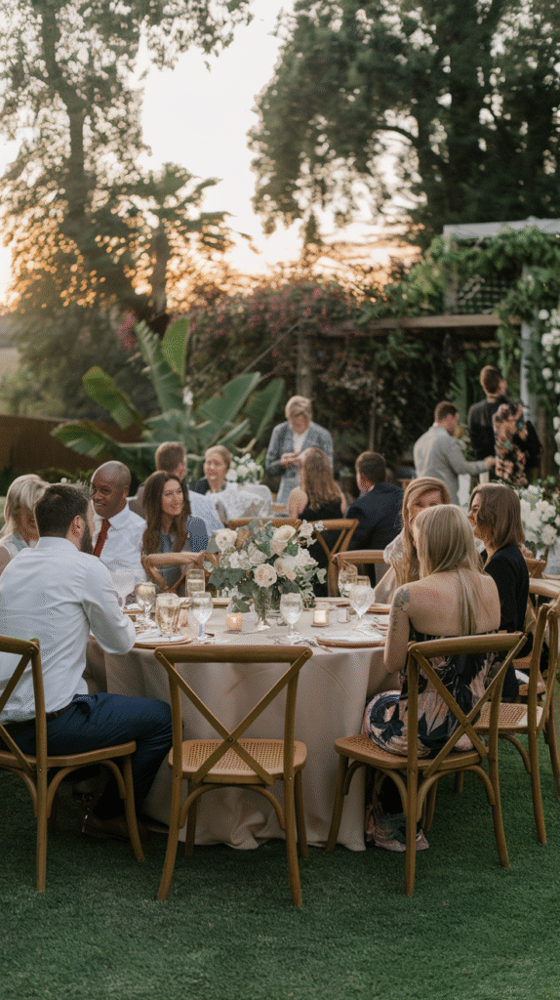
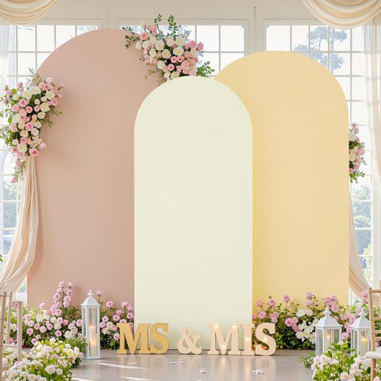
Set of 3 Arch Backdrop Covers, Premium Stretchy Spandex, Cream Nude Champagne
Shop on Amazon1. No Curfew, No Venue Rules
Rent a venue and you're renting their rules too — a hard cutoff time, a list of approved vendors, maybe a ban on candles.
A backyard doesn't come with a contract telling you when the night has to end.
The celebration can run exactly as long as it wants to, instead of wrapping up abruptly because a lease says so.
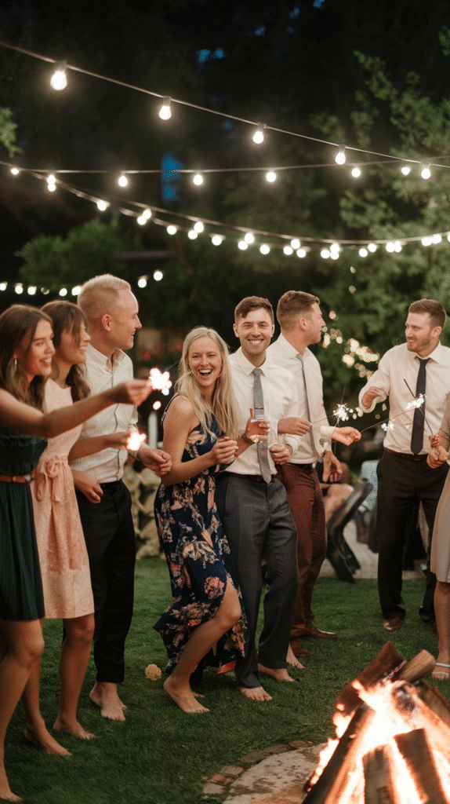
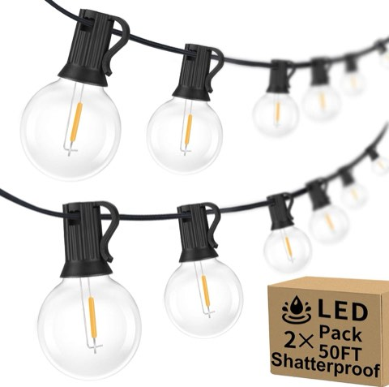
Outdoor String Lights, 2-Pack 100ft, G40 LED Globe Waterproof Patio Lights
Shop on Amazon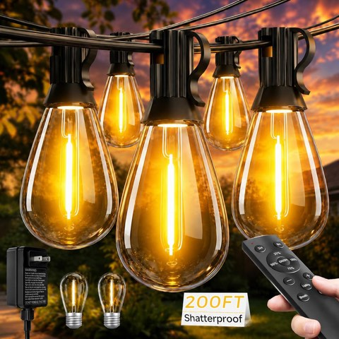
Tenmiro 200FT LED Outdoor String Lights with Remote, 72+2 Shatterproof Bulbs
Shop on Amazon2. The Coziest Vibe You Can't Really Buy
A backyard setting creates a relaxed, intimate feeling that a formal rented venue almost never matches, no matter how much money gets thrown at recreating it.
There's something about string lights over a lawn you've mowed a hundred times that a ballroom just can't fake.
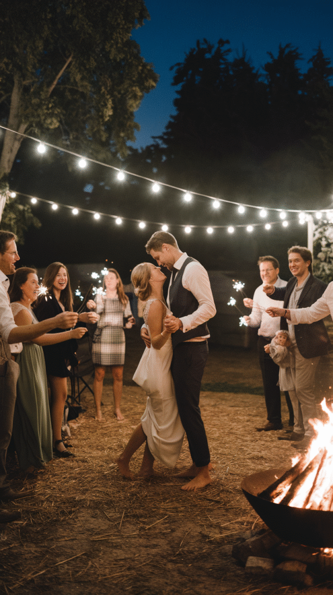
3. Nature Already Did the Decorating
Mature trees, existing landscaping, and the kind of natural light you can't buy at any price all do a surprising amount of the visual work before you've hung a single decoration.
That alone cuts the decor budget significantly, since the backdrop is already doing what a rented venue would otherwise charge you for.
4. Total Creative Freedom
No venue rules about vendors, decor, timing, or layout means the day can look and run exactly the way you planned it, not however a venue's policy happens to allow.
If you want to serve tacos at 11pm or set up a photo booth in the garage, nobody's stopping you.
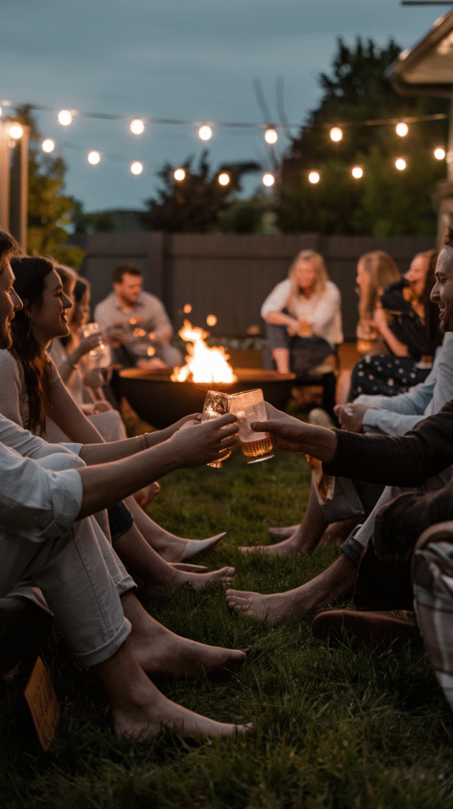
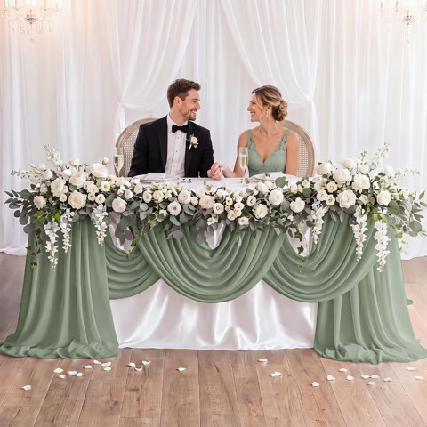
Panelee 90"x132" Sage Green Sweetheart Table Decor Wedding Tablecloth Set
Shop on Amazon5. Especially Good for Smaller Weddings
A backyard suits an intimate guest list especially well, and that's really where it shines.
A bigger wedding can still work here too, as long as the layout is thought through and there's enough careful planning behind it.
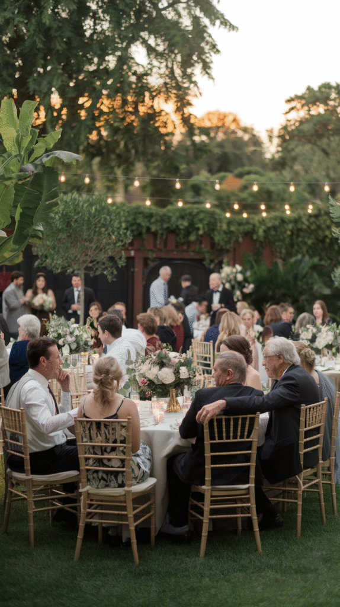
6. It's Genuinely Personal
Getting married somewhere that actually means something, somewhere years of real life already happened, adds a layer of meaning that no rented venue, however beautiful, can really replicate.
You're not borrowing someone else's backdrop for a day. You're using your own.
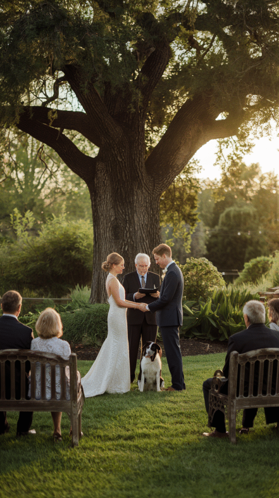
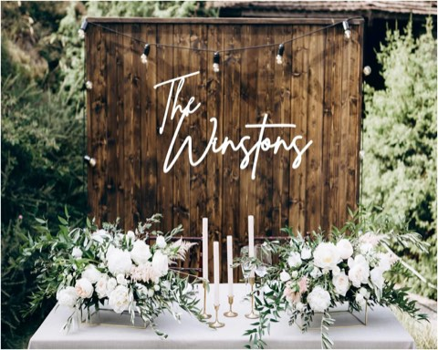
Custom Wedding Decor, Personalized Family Name Sign, Wooden Backdrop Sign
Shop on Amazon7. The Real Budget Advantage
Skipping a venue rental fee alone often covers a meaningful chunk of everything else in the budget, without you having to sacrifice the actual quality of the day.
That saved money can go toward better food, a better photographer, or honestly, just a smaller and less stressful budget overall.
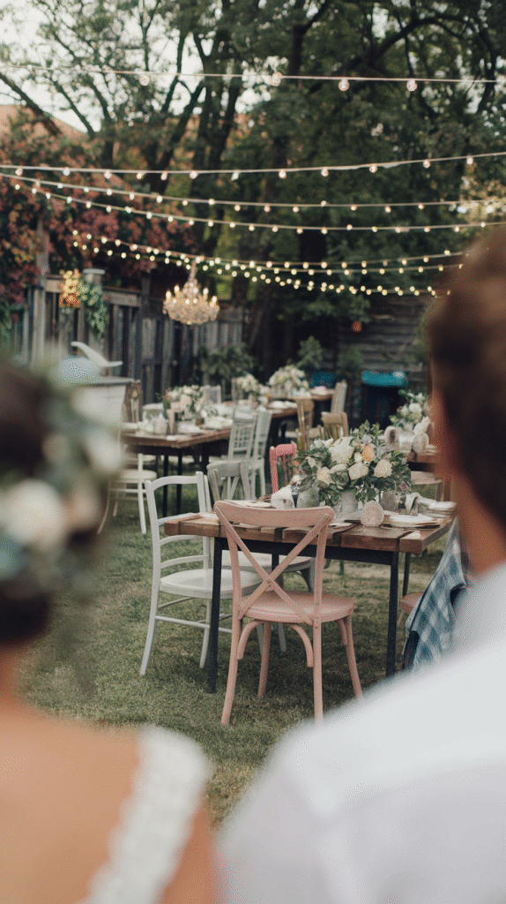
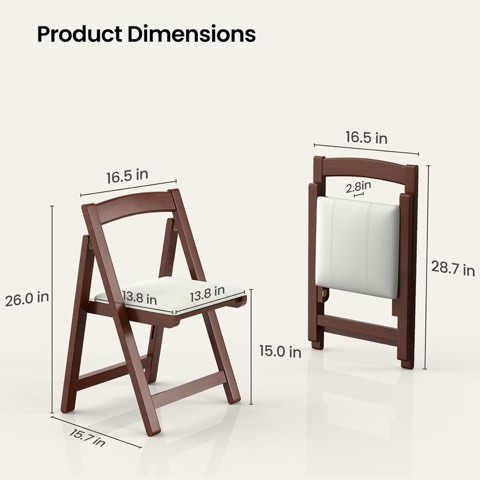
Wooden Folding Chair with Cushioned Seat, Portable, Stackable Solid Wood
Shop on AmazonA Few Things Worth Getting Right
Rent the essentials — tables, chairs, a tent — instead of assuming your backyard already has everything it needs. That assumption is where most last-minute scrambling comes from.
Have a real rain plan. Know your answer for power and sound. Sort out parking before the week of the wedding, not during it.
And don't try to DIY absolutely everything yourself. Hiring help for at least the hardest parts keeps the day feeling like a celebration instead of a second job.
Is It Actually Right for You?
A backyard wedding rewards a couple who values personal meaning, flexibility, and budget over a fully-managed, traditional venue experience.
The planning does take more hands-on effort than booking a full-service venue and just showing up.
But for the right couple, that extra effort is exactly what makes the day feel like it's actually theirs.
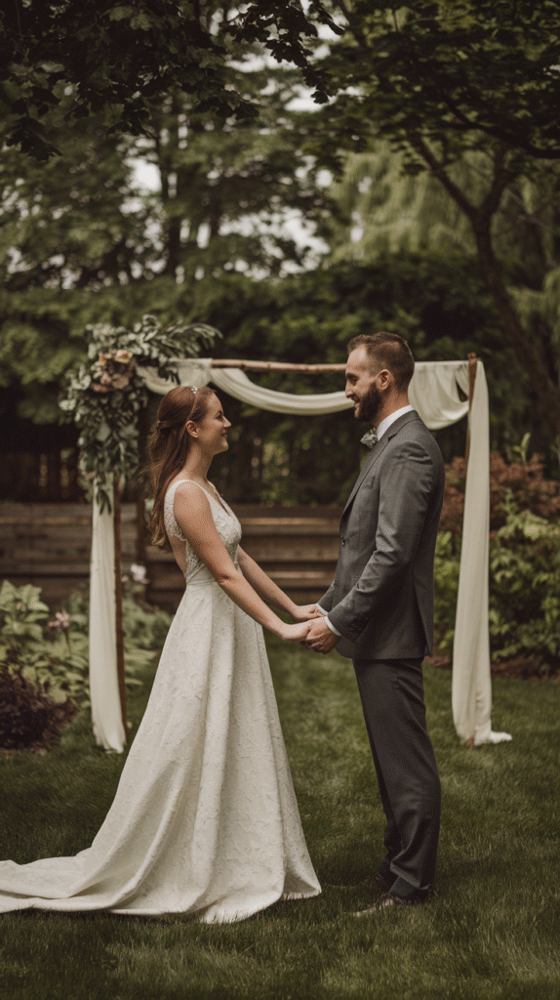
Your Backyard, Your Rules
None of these seven reasons make a backyard the right choice for every couple out there.
But for the ones it does suit, it tends to deliver something a rented venue, at any price point, usually can't.
A day that actually feels like home.